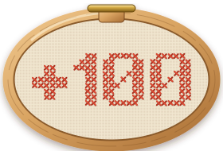

Body Double
Village HXQR
You found
the real Maya.

Your score300
A
The real Maya

i will reorganize your spice rack while you shower and call it love
B
It was the Wolf!

overthinking a text for 40 minutes then just sending 'k' 💀
AI-written
What big eyes you have...